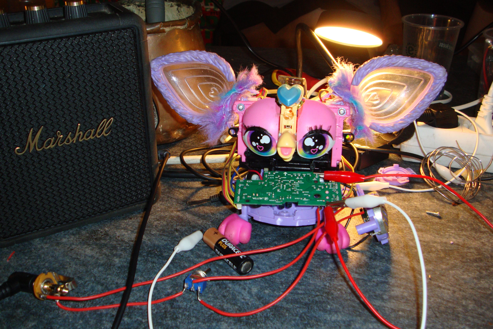
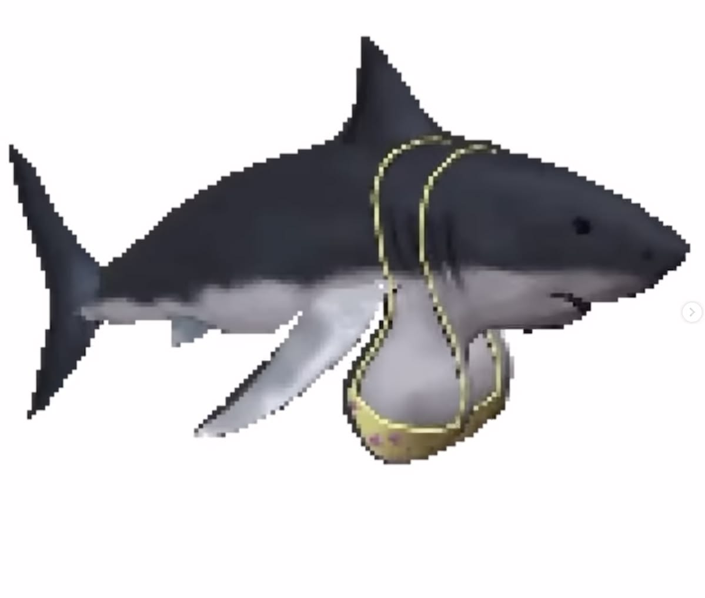
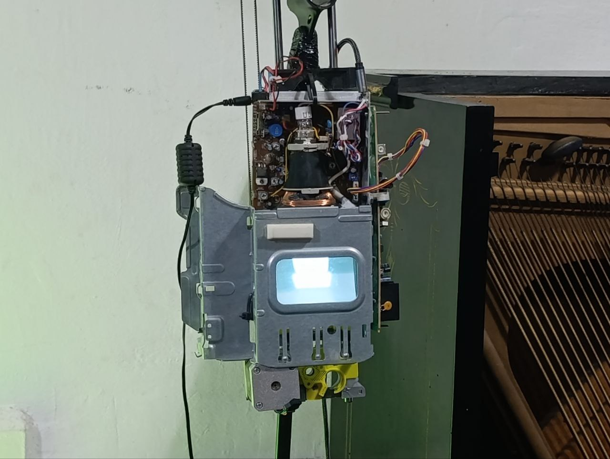
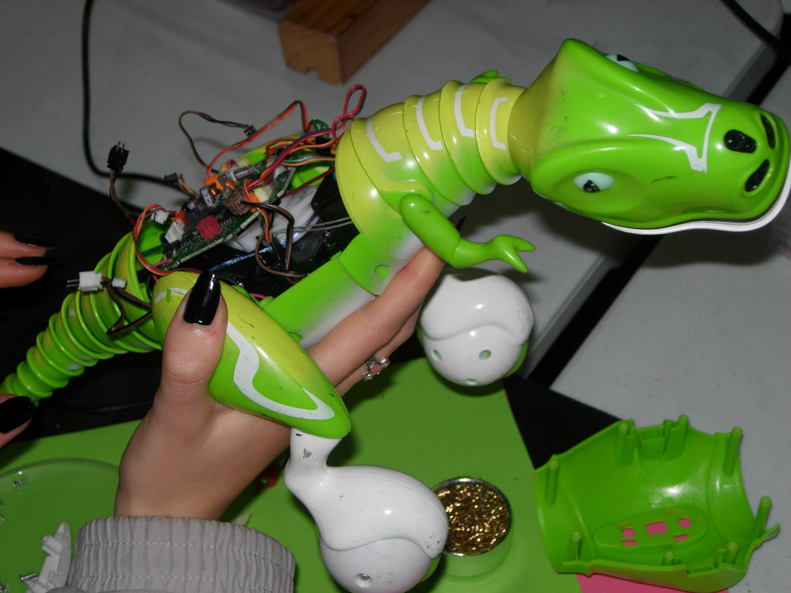
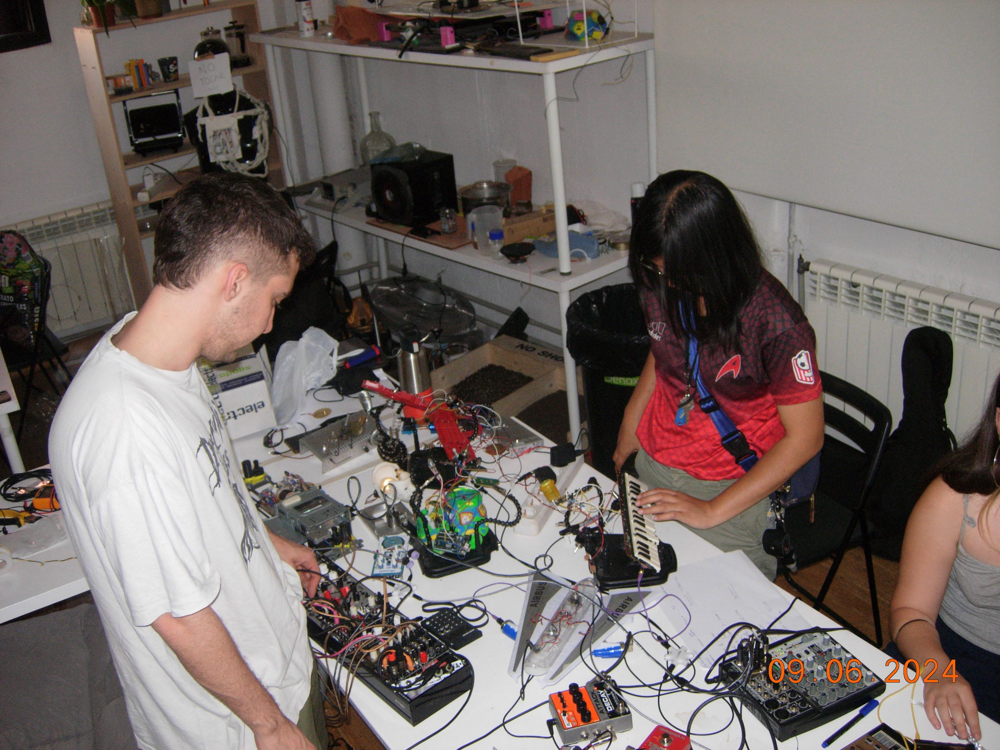
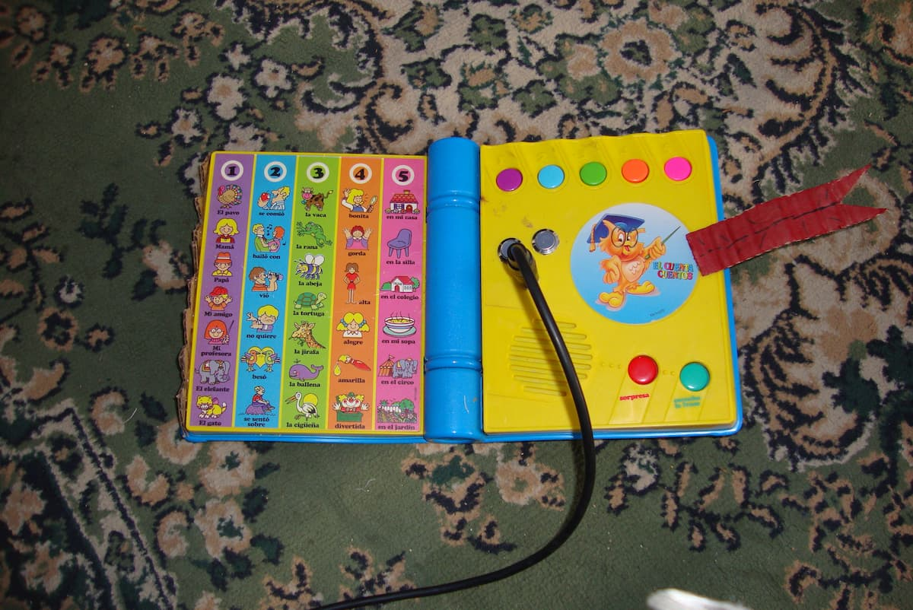
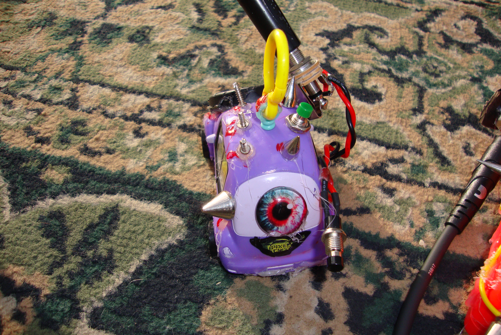
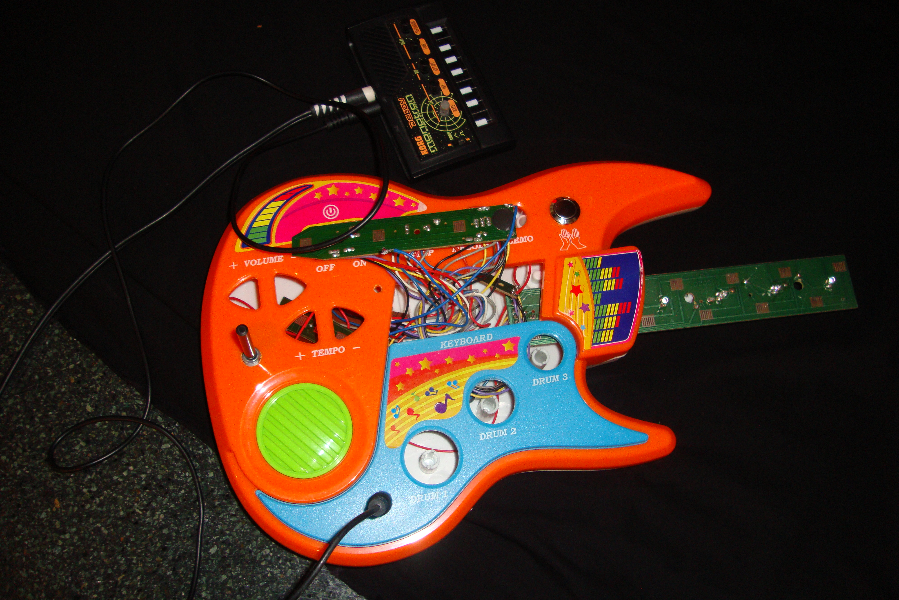
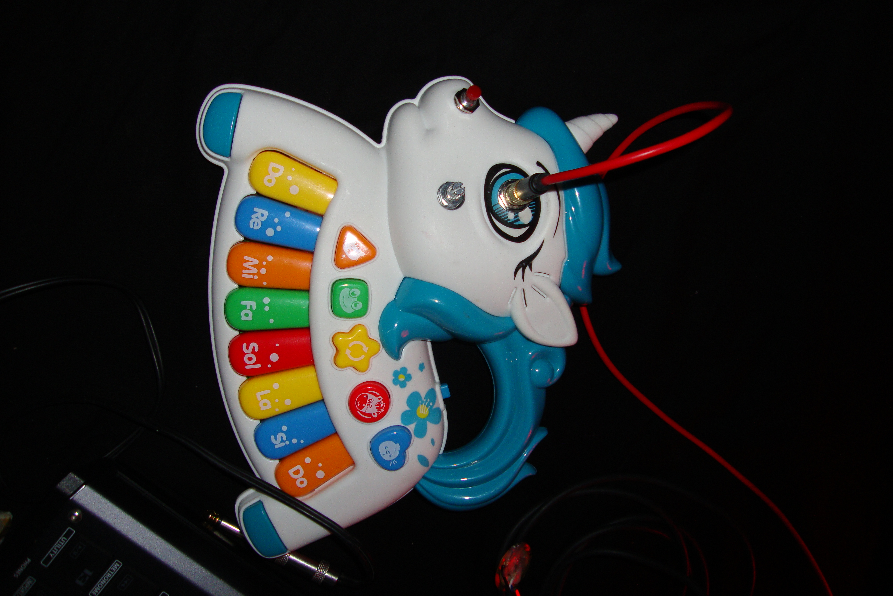
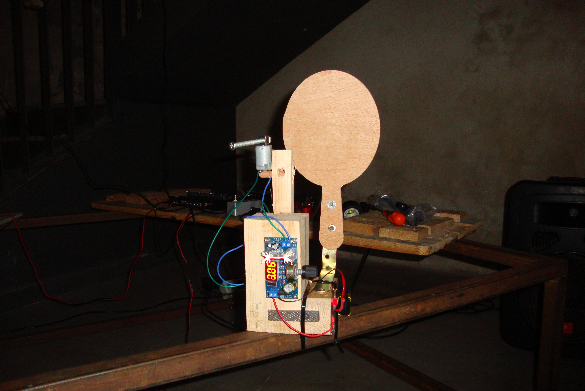

Circuit Bending pel Festival Rauxa a la CSO la 13.
Noooooooo!

Desafortunadamente esta web
no funcina para movil :(
CIRCUIT BENDING.
Prácticas de piratería y DIY: Investigación sobre el circuit bending.
[2024 - Actualmente]

Circuit Bending pel Festival Rauxa a la CSO la 13.










El Circuit Bending, en el mundo del DIY, es una práctica que se basa en abrir y modificar los circuitos originales de los juguetes. Literalmente, se puede traducir como «doblar un circuito», en el sentido en que se dobla con fuerza un trozo de hierro hasta curvarlo.
Pero, en un sentido más amplio, la expresión hace referencia a sacar el máximo provecho de un circuito electrónico, añadiéndole nuevos componentes como resistencias variables, botones, interruptores, salidas de audio, etc., buscando funcionalidades que no vienen determinadas de fábrica. Quizás una traducción de «Circuit Bending» más adecuada para nuestra lengua sería «exprimir un circuito»: conseguir que de él salga hasta la última gota de las capacidades que nos ofrece.
El capitalismo nos susurra al oído:
“Usa. Tira. Compra. Consume.”
Los dispositivos son bienes de consumo de un solo uso, con obsolescencia programada, diseñados para no ser reparados…
La narrativa de la “nube” hace que la tecnología sea fácil de usar, pero difícil de entender.
SOLO HAY UNA MANERA…
- Hazlo tú misma.
- Hagámoslo juntas.
- Hagámoslo con las demás.
- Repara tus dispositivos.
- Haz que el conocimiento sea compartido.
- Practica la autodefensa digital.
- ¡Descarga, copia y comparte!
- Diseña para que pueda repararse.
- Construye a partir de lo que ya existe.
“Si esto puede ocurrir por accidente, ¿qué se puede lograr a propósito?” — Reed Ghazala